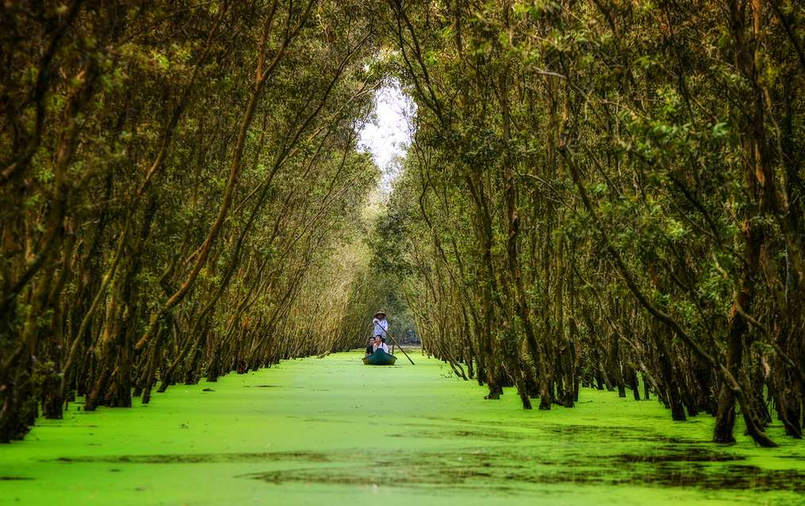
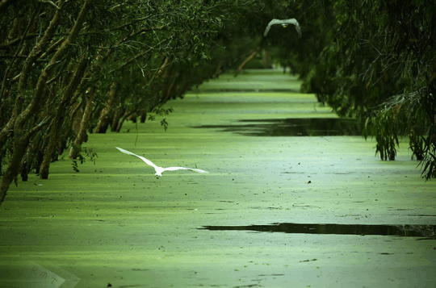
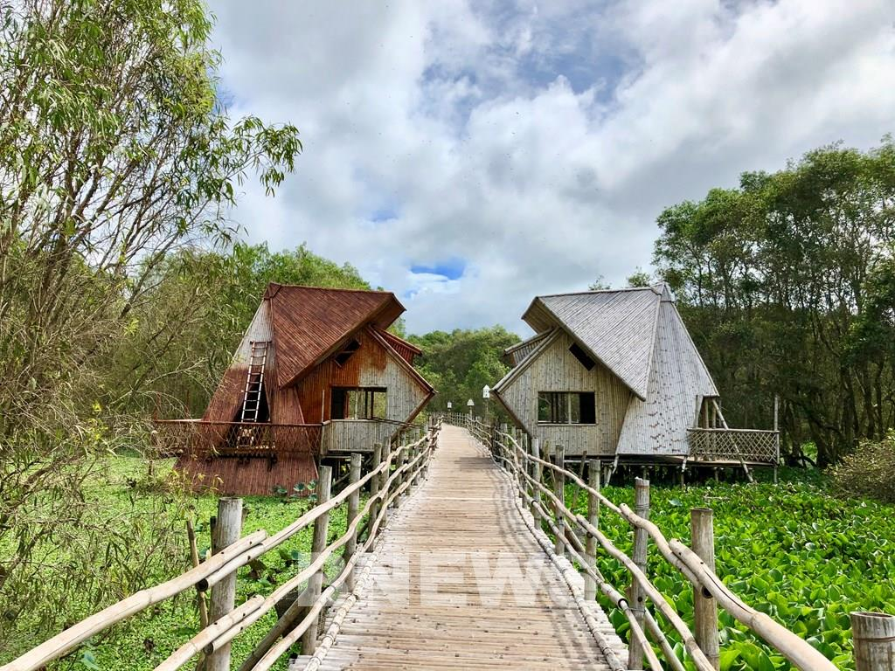
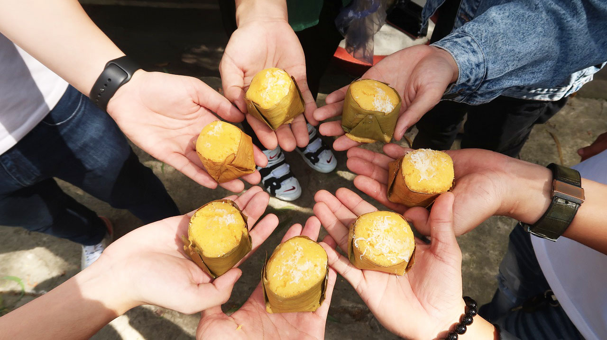
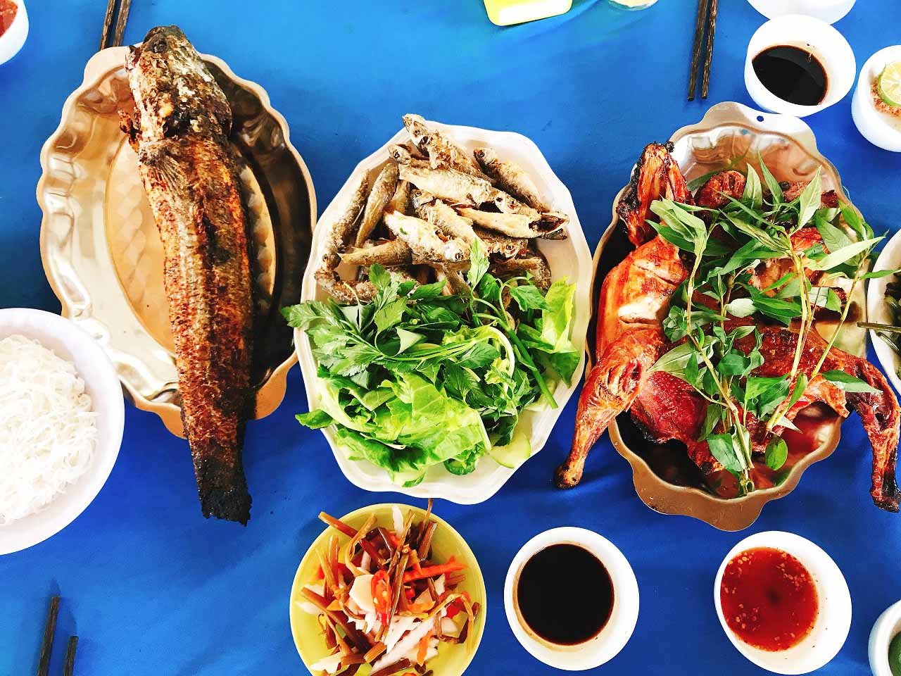

Giới Thiệu
An Giang mùa nước nổi luôn hấp dẫn khách du lịch trong nước và quốc tế. Có lẽ điểm đến nổi tiếng nhất phải kể đến chính là rừng tràm Trà Sư, dọc bên đường là những hàng cây xanh tỏa bóng râm mát. Cảnh đẹp nhất khi đi du lịch rừng tràm Trà Sư mùa nước nổi vào thời điểm từ tháng 9 đến tháng 11. Những bạn ham mê khám phá thiên nhiên hoang dã thì đừng bỏ lỡ ghé qua nơi này nhé.
Địa điểm
Rừng tràm Trà Sư thuộc địa phận xã Văn Giáo, huyện Tịnh Biên, An Giang cách thành phố Long Xuyên gần 100km. Hiện nay, rừng tràm Trà Sư đang là một trong những địa điểm tham quan tiêu biểu cho du lịch mùa nước nổi An Giang với diện tích lên tới 850ha. Ngoài ra đây cũng là cánh rừng tràm ngập nước có hệ động thực vật phong phú tại vùng miền Tây Nam Bộ.
-
1.Rừng Tràm Trà Sư đẹp nhất mùa nước nổi
Rừng ràm Trà Sư đẹp nhất chính là vào mùa nước nổi, tương ứng với khoảng thời gian từ tháng 9 đến tháng 11. Vào mùa này, dường như tràm cũng đặc biệt xanh hơn, nước về với các cánh bèo cám phủ xanh bề mặt, khi đi thuyền bạn sẽ cảm giác như đang lướt qua một thảm nhung vô cùng êm nhẹ và cực kỳ thích thú.
 -
2.Rừng Tràm Trà Sư mùa nào đẹp?
Theo kinh nghiệm đi du lịch rừng tràm Trà Sư của những người đi trước thì mùa nước nổi chính là thời điểm đẹp nhất(tức là từ tháng 8 đến tháng 11 âm lịch). Tại vì vào mùa này, du khách có thể tìm hiểu thêm nhiều loài động thực vật mà chỉ có ở mùa nước nổi.
Trong đó, thời gian đẹp nhất rừng tràm đó là lúc 7h đến 9h sáng và 5h đến 7h tối. Lúc này, du khách có thể đứng trên Đài quan sát ngắm nhìn cuộc sống của những đàn chim qua chiếc ống nhòm. Phía dưới nước có vô số loài tôm cá đang bơi lội, phía trên là muôn loài chim bay lượn cùng với những bông hoa tràm trắng tinh khiết tạo nên một bức tranh thiên nhiên vô cùng tuyệt đẹp. -
3.Chinh phục cây cầu tre xuyên rừng dài nhất Việt Nam
“Cầu tre vạn bước” có tổng chiều dài trên 2 km là “kiệt tác” nằm giữa rừng tràm Trà Sư. Chiếc cầu sẽ giúp du khách khám phá trọn vẹn hơn của thiên đường xanh nguyên sinh ngập nước Trà Sư. Sau khi được hoàn thành, cây cầu tre này đã tạo nên cơn sốt cho giới trẻ đến đây check-in “sống ảo”. Cầu tre được bao quanh bởi cánh rừng tràm xanh ngắt; và những thảm bèo nối dài dưới nước tạo nên khung cảnh nên thơ, lãng mạn và bình yên tựa như chốn tiên cảnh. Trải nghiệm đi dạo trên cầu tre và ngắm cảnh rừng tràm xanh mướt là điều du khách không thể bỏ lỡ khi đến vùng đất này.

Món ngon
Ngoài việc thưởng ngoạn tại rừng tràm, du khách có thể thưởng thức các đặc sản miền Tây nổi tiếng tại đây. Những món ăn đặc sản ở An Giang nổi tiếng như bánh bò thốt nốt, nước thốt nốt tươi, các loại bánh từ thốt nốt…đang chờ du khách thưởng thức.
Đặc biệt, du khách có thể thưởng thức bữa ăn trưa đậm chất miền Tây tại nhà hàng nằm giữa rừng tràm Trà Sư. Còn gì tuyệt vời hơn khi thưởng thức ẩm thức giữa không gian thiên nhiên hoang dã của núi rừng. Trước khi lại quán, du khách có thể gọi các món ăn trước cho nhà hàng chuẩn bị. Sau khi tham quan Trà Sư xong là du khách có thể thưởng thức các món ăn ngon tại đây. Menu của quán phục vụ các món ăn đặc sản, món ăn dân dã miền Tây mà bất cứ du khách nào cũng muốn thưởng thức.
-
1.Đặc sản bánh bò thốt nốt An Giang
Lá thốt nốt được dùng để lợp nhà, làm chất đốt, cây già làm cột nhà, làm bàn ghế… Riêng, trái thốt nốt để lại dư vị khó quên trong lòng du khách với những món ăn dân dã như: cơm (cùi) thốt nốt, nước thốt nốt tươi (hoặc lên men), đường tán, chè thốt nốt, bánh gói thốt nốt… Trong đó, món ăn gây ấn tượng cho du khách mỗi khi đến Châu Đốc trong mùa thu hoạch trái là bánh bò thốt nốt.
Theo các bà bán bánh nơi đây, làm món bánh bò thốt nốt hơi mất công một chút. Bánh gồm các nguyên liệu chính: bột gạo, bột thốt nốt, đường thốt nốt, nước cốt dừa, và phải tuân thủ theo đúng quy trình.Gợi ý địa chỉ dành cho bạn:
-Nhà hàng giữa rừng tràm Trà Sư.
-
2.Thưởng thức các món ăn dân dã miền Tây
Từ những món dân dã đặc sản miền Tây mùa nước nổi như: Lẩu cá linh bông điên điển, cá linh chiên giòn, lẩu chua cá hú bông súng hoa điên điển,… Đến những món đặc trưng của rừng Trà Sư nghe thôi đã thèm như gà nướng mật ong hoa tràm, gà nướng đất, cá lóc nướng trui,…Ngồi cùng bạn bè bên chòi lá, ngắm nhìn cảnh sắc sông nước miền Tây, ăn bữa cơm dân dã. Mọi người cùng nhau trò chuyện về cuộc sống, uống cốc trà đá hay uống vài lon bia thì còn gì bằng?
Gợi ý địa chỉ dành cho bạn:
-Nhà hàng giữa rừng tràm Trà Sư.
Hỗ trợ
Tìm hiểu thêm
Tải ứng dụng của chúng tôi
/qr.png)
/ggplay.png)
/appstore.png)